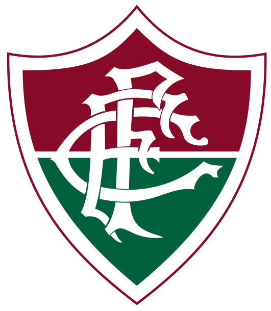

G4 do brasileirão 2022
Palmeiras
Localização: São Paulo, SP
Estádio: Allianz Parque
Curiosidade: O Palmeiras foi fundado em 26 de agosto de 1914 como Palestra Itália para ser o time da colônia italiana, muito forte em São Paulo no começo do século XX.
Internacional
Localização: Porto Alegre, RS
Estádio: Estádio Beira-Rio
Curiosidade: A maior goleada do Internacional sobre o rival Grêmio foi um 7 a 0, em 17 de setembro de 1948, na partida final do campeonato da cidade de Porto Alegre.
Fluminense
Localização: Rio de Janeiro, RJ
Estádio: Maracanã
Curiosidade: O primeiro gol brasileiro em uma Copa do Mundo foi marcado por um lendário jogador do Fluminense: João Coelho Netto, o Preguinho, no Uruguai, em 1930.
Corinthians
Localização: São Paulo, SP
Estádio: Neo Química Arena
Curiosidade: Na década de 1980, o elenco do Corinthians protagonizou a histórica "Democracia Corinthiana", movimento que ajudou a mudar a história do Brasil durante regime ditatorial.